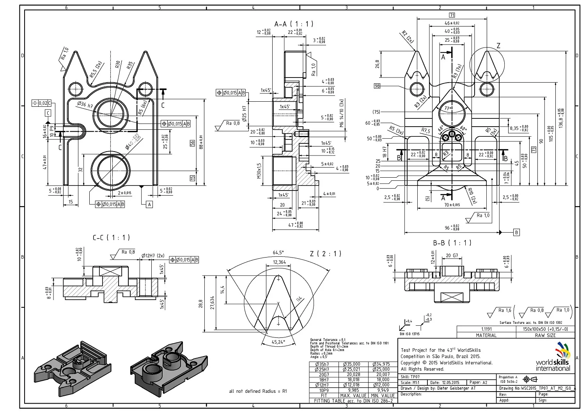

WorldSkills 2015 · São Paulo, Brazil
CNC Milling — Test Project 2
3D Model
Loading 3D model…
Drag to rotate · Scroll or pinch to zoom · Right-drag or two fingers to pan
Engineering Drawing

Machining Notes
Test Project 2 from the WorldSkills 2015 competition in São Paulo. Use Show bottom on the 3D model to see the underside.
Key features (from the drawing)
- Overall size about 142 × 96 × 47 mm
- Threads: M30 × 1.5, M6
- Fits: Ø12 H7 (2×), 18 H7, Ø25 H7, 20 G7, Ø35 h7, Ø36 h7, 10 P9
- General tolerance ±0.1 (thread and hole depth 0/+2 mm)
- Surface finish Ra 1.6, with Ra 0.8–1.0 where marked
- Material: steel 1.1191 (C45E)
Medallists · WorldSkills 2015
- Gold Hee Dong Lee Korea
- Gold Zhikun Zhang China
- Bronze Yu-Yu Lai Chinese Taipei
CNC Milling results from the official WorldSkills results. Equal scores share a medal, so some years have two golds or no bronze.
Downloads
The 3D model is a compressed glTF (.glb) file. It opens in Blender, the online glTF Viewer and most 3D apps.